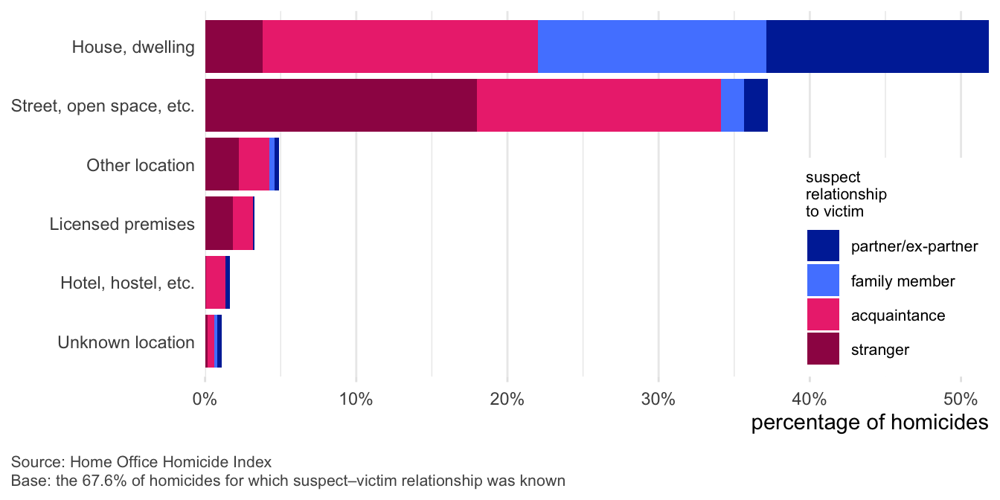
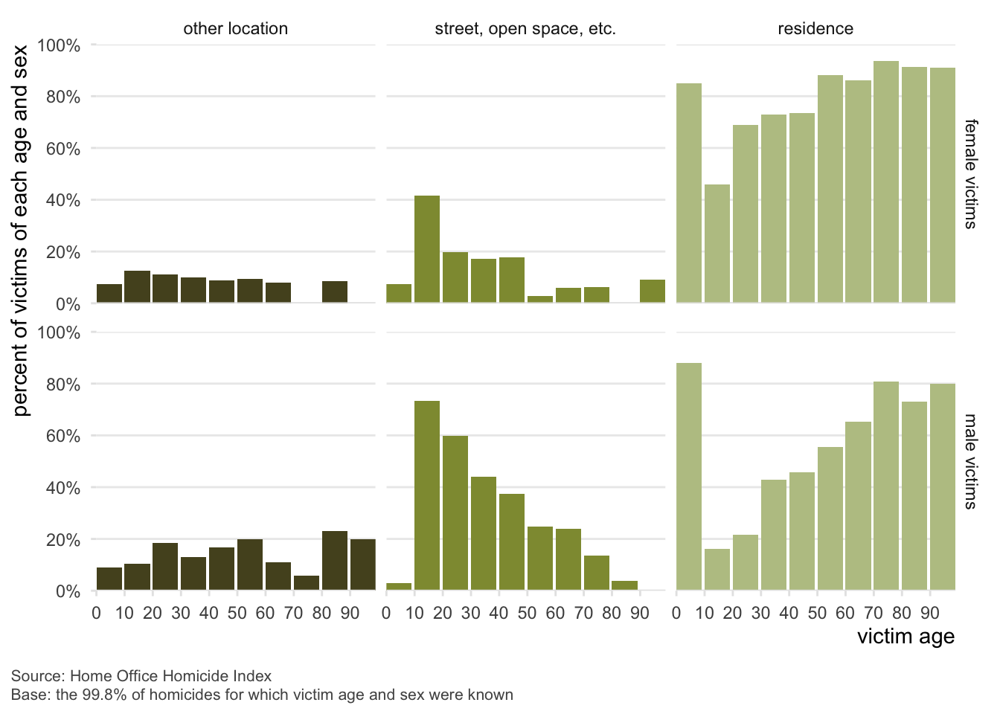

![A choropleth map of England and Wales showing homicide rates per million residents by police force area, based on Home Office Homicide Index data. The map uses a gradient from light (lower rates) to dark blue (higher rates). Each police force region is outlined and numbered if it’s among the top ten for homicide rates. Cleveland ranks highest at 49.2 homicides per million, followed by Greater Manchester (46.7), West Midlands (45.6), and the Metropolitan Police area (45.0). Other top areas include Dyfed-Powys, Lincolnshire, West Mercia, Lancashire, and Warwickshire. A legend on the right indicates the color scale ranging from 10 to over 50 homicides per million. The map excludes 39 victims from the Grays lorry incident. Lighter-colored areas represent lower homicide rates, mainly in southern and rural regions, while darker areas are concentrated in some urban and northern regions.](index_files/figure-html/fig-pfa-all-1.png)
Homicide in England and Wales, Part 5: Homicide hotspots
This is the fifth in a series of blog posts summarising the nature of homicide in England and Wales. Each post covers a different aspect of homicide, based on data from the Home Office Homicide Index. This post looks at where in England and Wales homicide is geographically concentrated. This post is a summary of part of a longer national problem profile of homicide in England and Wales written by me and Prof Iain Brennan.
Half of all homicide occurs in six police-force areas
All types of crime are heavily geographically concentrated in a small number of places, although not necessarily the same places for all types of crime. As such, it’s not surprising that homicide is also strongly concentrated in a small number of places. About half of all homicides occurred in 6 police-force areas: Metropolitan Police, Greater Manchester, West Midlands, Essex, West Yorkshire, and Thames Valley1.
Partly this is because these police-force areas have the largest populations, but that’s not the whole story. When taking population into account, the highest rates of homicide per million residents were in the Essex, Cleveland, and Greater Manchester police-force areas. However, the high rate in Essex is largely due to the 39 homicides recorded as a result of the manslaughter of 39 people who died while being smuggled into the UK in a lorry in Grays in October 2019. If these homicides are excluded, Essex had the 13th highest homicide rate among forces in England and Wales, with the highest rate instead being in Cleveland (Figure 1). The homicide rate per million people in Cleveland was 5.4 times higher than the rate in Surrey.
Homicides of men and women are concentrated in different police areas
Since most homicide victims were male, the overall homicide rates at police-force-area level are mainly driven by homicides of male victims. Homicides of female victims were less geographically concentrated than homicides of men, and in different places. While the highest rates of homicides involving male victims were in urban forces, homicide rates for female victims were highest in non-urban forces (Figure 2). The forces with the highest rates of female homicides were Dyfed-Powys, Warwickshire, Norfolk, Staffordshire, and West Mercia. This is likely to reflect the higher number of homicides of male victims that were related to drug markets, the night-time economy, etc. and the higher proportion of female victims who are killed in domestic homicides (see part six of this series).
![Side-by-side choropleth maps of England and Wales show homicide rates by police jurisdiction, separated by victim sex. The left map displays male homicide victims with a national rate of 45.4 per million residents. Darker shades indicate higher rates, with Cleveland (northeast) having the highest, followed by West Midlands Police (WMP), the Metropolitan Police Service (MPS), Greater Manchester Police (GMP), and Lincolnshire. The right map shows female homicide victims with a national rate of 16.6 homicides per million residents. Dyfed-Powys in Wales has the highest rate, followed by Warwickshire, Norfolk, Staffordshire, and West Mercia. Both maps use varying shades of blue to represent homicide rates per million, with a darker hue indicating a higher rate. A note clarifies that victims from the Grays lorry incident were excluded. The maps are sourced from the Home Office Homicide Index and based on data where victim sex was known, covering 99.9% of all homicides recorded.](index_files/figure-html/fig-pfa-sex-1.png)
Some local authorities have much higher homicide rates than others
Homicides were also concentrated at local authority district level2. Of the 317 local authority districts in England and Wales, half of homicides occurred in 56 districts, a quarter in 20 districts3 and 10% in just 6 districts (Birmingham, Brent, Croydon, Greenwich, Manchester, and Sheffield).
Figure 3 shows the homicide rate per 100,000 residents per year in local-authority districts, with districts labelled if they had a homicide rate higher than twice the national average4. While the homicide rate was higher in some regions than in others, there was substantial variation within each region. For example, while London had the highest regional homicide rate and the South East region the lowest, three London boroughs had homicide rates below the regional rate for the South East.
![Scatter plot showing the annual homicide victimisation rate per 100,000 residents across local authorities in England and Wales, grouped by region. Each dot represents a local authority, with red circles for mainly urban areas and blue for mainly rural. The x-axis shows homicide rates ranging from 0 to over 5; the y-axis lists regions like London, West Midlands, and East of England. Black bars represent the regional average homicide rate, while a dashed vertical line shows the national average. London shows many urban authorities with rates above 1. Some outliers with high rates include Lambeth, Greenwich, and Boston. South East and East of England have clusters of low-rate rural areas. The chart visualizes both the variability within regions and the urban-rural divide in homicide rates. Sourced from the Home Office Homicide Index, based on 94.4% of cases with known offence locations. Legend clarifies circle colors and rate markers.](index_files/figure-html/fig-lad-1.png)
It would be easy to think of homicide as a purely urban phenomenon, but three of the 10 districts with the highest homicide rates (Boston, Pembrokeshire, and Pendle) were largely rural. While Black people are over-represented as both victims of homicide and as homicide offenders, the district with the highest homicide rate (Boston in Lincolnshire) has a population that is more than 95% White.
Homicide is concentrated in a small number of neighbourhoods
Homicide was also concentrated within each local authority district. This is partly because homicide is a relatively rare event, so it is inevitable that most areas will have no homicides in a given period. Nevertheless, homicides were substantially more clustered in a few places than we would expect by chance.
For example, in London homicides were tightly concentrated in a small number of areas (Figure 4). It’s important to note that while I’ve chosen London for this map, a similar pattern of heavy concentration in a few areas would be apparent in maps of other parts of England and Wales.
The strong concentration of homicide in a few neighbourhoods emphasises the importance of ensuring that efforts to tackle homicide were concentrated in the areas with the highest need.
![A hexagonal heat map of London shows the density of homicides based on data from the Home Office Homicide Index. The map uses a gradient from light beige to dark red-orange to indicate areas of low to high homicide density. Central and southeastern parts of London, including areas around Stockwell, Warwick Avenue, and Newbury Park, show the highest concentrations, marked by darker red-orange hexagons. Other named areas include Turnpike Lane and Selhurst, which show moderate to lower densities. The map features borough boundaries and a scale bar indicating 8 km for reference. A legend at the bottom left explains the color gradient, and a note beneath it states that the data covers 94.4% of cases with known offence locations. The map emphasizes geographical variation in homicide frequency across Greater London.](index_files/figure-html/fig-map-london-1.png)
Homicide is concentrated in deprived areas
Homicides are more likely to occur in neighbourhoods that have higher levels of deprivation (Figure 5)5. A quarter of all homicides occurred in the 11% of most-deprived neighbourhoods, while half of all homicides occurred in the 27% of most-deprived neighbourhoods.
![A bar chart shows the relationship between neighbourhood deprivation and homicide rates in England. The x-axis represents the population of England arranged by level of deprivation, from 0% (most deprived) to 100% (least deprived). Each bar represents 1% of the population and shows the annual number of homicides per million residents in that group. The y-axis ranges from 0 to 35 homicides per million. Homicide rates are highest in the most-deprived areas on the left side of the chart, with most-deprived percentile showing a rate over 30 homicides per million. The rates generally decline as deprivation decreases, although there are some fluctuations. The right side of the chart, representing less-deprived areas, shows consistently lower homicide rates, mostly below 10 homicides per million. Above the chart, a row of percentages indicates the share of total homicides that occurred in each decile of deprivation. These are: 23%, 16%, 14%, 12%, 10%, 8%, 7%, 5%, 4%, and 2%. An explanatory note states: “Each number shows the percentage of all homicides that happen in neighbourhoods containing 10% of the population of England, arranged in order of how deprived they were. If there were no relationship between deprivation and homicides, we would expect 10% of homicides to occur in each 10% of neighbourhoods.” Another note explains the bars: “Each bar represents neighbourhoods occupied by 1% of the population of England, arranged in order of how deprived those neighbourhoods were. The height of each bar represents the rate of homicides in an area inhabited by that 1% of the population.” The chart visually demonstrates a clear relationship: more-deprived neighbourhoods experience disproportionately higher homicide rates than less-deprived ones. Source: Home Office Homicide Index. Based on 94.4% of homicides with a known offence location. Excludes 39 homicides from the Grays lorry deaths incident.](index_files/figure-html/fig-map-deprivation-1.png)
Most female and older male victims are killed at home
Homicide most-often occurred at someone’s home (Figure 6). This was especially true for female victims: 78% of female victims were killed in a house or dwelling, compared to 41% of male victims. Conversely, only 14% of female victims were killed in a street or open space, compared to 47% of male victims.

Some types of homicide we particularly likely to happen at home. 87% of homicides of female victims in which the suspect was a current or ex-partner occurred in a house or dwelling, along with 77% of homicides of male victims in which the suspect was a partner.
However, in homicides in which the suspect was a stranger, 70% of male victims were killed in a street or other public place, compared to 61% of female victims – 26% of female victims killed by strangers were killed in a home.

A large majority of female victims were killed in a dwelling at all ages except 10–19 years – more than 80% of female victims aged 20 or over were killed in a residential location (Figure 7). Male victims aged 10–40 were more likely to be killed in a street or open space than in a residential location, while for male victims under 10 or over 50, most homicides occurred in residences.
We can combine homicide circumstances (which I covered in Part 2 of this series) and location types to further understand where homicide is most concentrated. For male victims:
- 25% of homicides occurred in the context of non-domestic fights, brawls, etc. (e.g. pub fight, argument over girlfriend) in a street or open space
- 13% in the context of non-domestic fights, brawls, etc. in a house or dwelling
- 9% in the context of domestic abuse in a house or dwelling
Meanwhile for female victims:
- 52% of homicides occurred in the context of domestic abuse in a house or dwelling
- 7% in the context of child abuse in a house or dwelling
- 4% in the context of domestic abuse in a street or open space
In summary
Like all other types of crime, homicide his heavily concentrated in a few places. In England and Wales, half of homicides occur in six of the 43 police-force areas, and in 56 of the 317 local authority districts. Homicides of male victims are more concentrated in urban areas, while homicides of female victims are more concentrated in rural police-force areas. Homicides are also concentrated at local level, and are particularly likely to occur in deprived areas.
Footnotes
In this analysis, homicides in the City of London are analysed as if they occurred in the Metropolitan Police District↩︎
This includes districts within administrative counties, and unitary authorities.↩︎
Birmingham, Brent, Bristol, Coventry, Croydon, Enfield, Greenwich, Haringey, Kirklees, Lambeth, Leeds, Leicester, Liverpool, Manchester, Milton Keynes, Newham, Redbridge, Salford, Sheffield, and Southwark↩︎
15 districts had a homicide rate that was greater than twice the national homicide rate: Blackpool, Bolsover, Boston, Brent, Croydon, Greenwich, Haringey, Lambeth, North East Derbyshire, Pembrokeshire, Pendle, Redbridge, Redditch, Salford, and Southend-on-Sea↩︎
Deprivation data were taken from the government English Indices of Deprivation 2019. This analysis includes only homicides that occurred in England, since comparable deprivation data were not available for neighbourhoods in Wales.↩︎